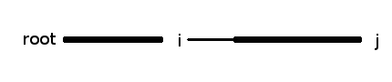

（周末写出 LCT 有感……）
我最近发现自己也应该写写题解了。一是目测对算法学习有帮助，二是也分享分享我的一些东西。但是我就在想，网上写的讲解多好啊，自己还费劲写什么？然而仔细看看，我发现网上的很多题解的代码有算法讲解、模板代码，却没有模板代码的讲解。所以我来讲模板好了。
我在这里用了一个 literate programming 的方式来组织我的代码，程序和文本夹杂，希望能达到边说边写的效果。（此处有一脑洞：能不能在右边搞个代码显示，向下滚动的时候自动更新代码……）
既然我只讲代码，我得我默认大家知道 Splay 是什么，大概知道 Link/cut tree 是什么，但就是写不出来。
这次我特意挑了一道比较简单的 HDU 2475（对，这是个链接）。老师正好要我们写 LCT，我看了半天总算差不多弄明白了。当时看到这道题的时候感觉整个人是非常爽的，因为它并没有要维护的信息。一会儿你也会发现，这个 Splay 居然只存左右子和父节点。记得看见 Wikipedia 底下列了一个 Euler tour tree，有类似的功能，好像也能搞这道题，我表示欣喜若狂，发现了一个神奇的算法！想必没有别人是这么写的。然而事实是，当我调不对去网上找模板拍时，才发现原来网上神犇都用的 Euler tour tree，看来还是我火星了。
数据结构写指针式还是数组式？我反正选数组式。我们可以用这个技巧来简化代码：在 C/C++ 中，有 A[i] 与 i[A] 等同。二维的呢？A[i][j] 与 i[A][j] 等同。也就是说，我们把代码写成这样：x[c][1][parent] = x;
如果没记错的话，这个写法是 C/C++ 标准的，而且反正也是个无害的功能，CCF 之类的应该是不会禁的。因此我们的数据结构是这样的：
int c[MAXN][2], parent[MAXN];练习 这样写完之后类型就完全 orz 了，因为本来指针和 int 可以区分的，现在混淆了。用 C++ 实现一个封装这个功能的类，使我们可以像 T(x)[parent] 这样获得 x 的属性，避免这个混淆。另外，能实现一个类达到 T(x)(splay) 代替 splay(x) 吗？T(x)(apply_lazy, 2) 代替 apply_lazy(x, 2) 呢？能扩展到任意个参数吗？
其实我们只需要一个 rotate，而且不需要传方向参数。额，说好的 left_rotate 和 right_rotate 呢？事实上，这个是没问题的，因为把一个非根节点往上转一次只有一种方法，所以我们可以直接传需要向上移动的节点。为了实现这个过程，我们需要一个辅助函数：
// 要求：x[parent] != 0
// 性质：x[parent][flag(x)] = x
inline int flag(int x) { return x[parent][c][1] == x; }
flag 指示了一个节点的“方向”，我们可以用它来确定它附近的哪些节点需要变动。有了 flag，每次旋转需要改动的指针就可以表示出来了。开写：
// 将节点 x 向上旋转使其替换 x[parent]，要求 x[parent] != 0。
inline void rotate(int x)
{flag 保存。其中，k 和 m 分别是 x 和 p 的 flag。
int k = flag(x),
p = x[parent],
g = p[parent],
r = x[c][!k],
m = g > 0 ? flag(p) : 0;然后重新连接就好了。在这里，我推荐读者自己写一下四个节点的六个指针变动。注意特判节点是否存在。重新连接的代码如下：
if(g > 0) g[c][m] = x; // g
x[parent] = g; // x (*)
x[c][k^1] = p;
p[parent] = x; // p
p[c][k] = r;
if(r) r[parent] = p; // r
}至于为什么用 g > 0，主要是为了后面写 Link/cut tree 时方便，因为我们可以在 parent 里存一个负的值来表示这个不是一个偏好边（preferred edge）。这样，我们就不用再特别维护一个 path_parent 数组了，因为不管 g 是正是负，我们只要把 x 指过去就行了（在代码里标 * 处）。
练习 不看着我的代码把 rotate 写一遍，并指出：
先澄清一个概念：只有双旋的才是 Splay，单旋的其实叫 rotate to root，经常被戏称为 Spaly。单旋的是达不到均摊 O(log n) 的时间复杂度的。
我相信，对于写不出 Splay 的你，这套图早都看烦了
各种左左、右右什么的，好多情况呢。但是咱们不是已经搞了个合并的 rotate 了嘛，所以：
inline void splay(int x)
{
for(; x[parent] > 0; rotate(x))如果就到这里，for 的主体留空，我们就得到了 Spaly。但是还有双旋呢对吧？
if(x[parent][parent] > 0)
{怎么判断要 zig-zig 还是 zig-zag 呢？得看两个节点的方向而定。方向怎么判断？用我们前面定义的 flag 呗。
if(flag(x) == flag(x[parent])) // zig-zig
rotate(x[parent]);
else // zig-zag
rotate(x);
}
}就像 Splay 操作在 Splay 树中的地位一样（额这名字……），Access 几乎是 Link/cut tree 的核心，其作用也是把一个节点放到一个方便的位置上。实现嘛，也像 Splay 一样无语：（几乎是）暴力地把整个链全都改成偏好边。(orz tarjan 神犇各种奇怪的数据结构)
相信大家都对 Access 表示很无语吧，我先来一个递归版的 Access。这个交上去是可以 AC 的，但是复杂度我不敢保证。
// 重新调整树，使 x 所在偏好链为 x 到 x 所在树的根节点
// 且 x 是其所在 Splay 的根节点
void access1(int x)
{首先我们要将 x 与其在树上的偏好的子节点的边变成非偏好边：
splay(x);
if(x[c][1])
{parent 表示非偏好边。
x[c][1][parent] = -x;
x[c][1] = 0;
} if(x[parent] < 0)
{
access(-x[parent]);-x[parent] 往上已经连好了，且没有偏好子了，我们把 x 连上去
(-x[parent])[c][1] = x;
x[parent] = -x[parent]; rotate(x);
}
}据我所知，没有别人的 Access 是这么写的。（好中二啊……）
练习 算一下我那个递归 Access 的复杂度。是 O(log2 n) 的吗？还是也是 O(log n)？
然而我们不能满足于一个递归算法，因为我们连其复杂度都不知道，更不用说什么爆栈的事了。事实上，我们整个程序其他部分都可以不用递归写，这里也没必要，用那个经典的 Access 就好了。既然从上往下连就得递归，我们就从下往上连。
inline void access(int x)
{
splay(x);
if(x[c][1])
{
x[c][1][parent] = -x;
x[c][1] = 0;
}
while(x[parent] < 0)
{
int w = -x[parent];找到下一个需要连的节点 w 了，干什么呢？当然是像上面一样，先把它的偏好子断开：
splay(w);
if(w[c][1])
w[c][1][parent] = -w;然后，把 x 接上去作为偏好子。因为我立刻改了 w[c][1]，所以我上面没有 w[c][1] = 0
w[c][1] = x;
x[parent] = w;然后下一个该连哪个点了？哦对，就是这个 w。
x = w;
}
}注意一下，我们这个 Access 为了简化实现，没有要求 x 变成 Splay 的根，所以我们下面经常得 Access 完了立即 Splay。
练习 听说有人喜欢用 for，那用 for 来写一遍 Access 吧。
这个问题我本来以为很好弄，结果发现居然不知所措，问老师，老师也说不明白……其实确实很好弄（这么玩有意思吗？），知道 v 的父节点是 u，就把 v[parent] 设为 -u就好了。
练习 自己写 QUERY。
void MOVE(int i, int j)
{先判断一下把节点移到自己里面的情况。
if(i == j) return;然后，判断 j 是不是 i 的子节点。方法：首先 Access j，再 Access i。如果 i 是 j 的子节点的话，j 所在链上面的非偏好边一定连向 i，如下图：

if(j)
{
access(j);
access(i);
splay(j);
if(j[parent] == -i) return;
}然后将节点 i 拿下来。方法：Access i，然后断开 i 与其父节点的偏好边。
access(i);
splay(i);
if(i[c][0]) i[c][0][parent] = 0, i[c][0] = 0;最后，把 j 接到 i 上面去。方法：Access j，然后在 i 和 j 之间连一条偏好边。
if(j)
{
access(j);
splay(j);
i[c][0] = j;
j[parent] = i;
}
}于是整个 LCT 及操作就写好了，经过轻微的缩行后，89 行写完了这些函数，再加上主函数共 126 行。
有问题，可以参见我的代码库（别忘了这是链接……）（2015-12-14：东西真少不是吗？）
练习 把程序写出来，并把题给 AC 了。（我相信你可能（what?）已经在做这件事了）